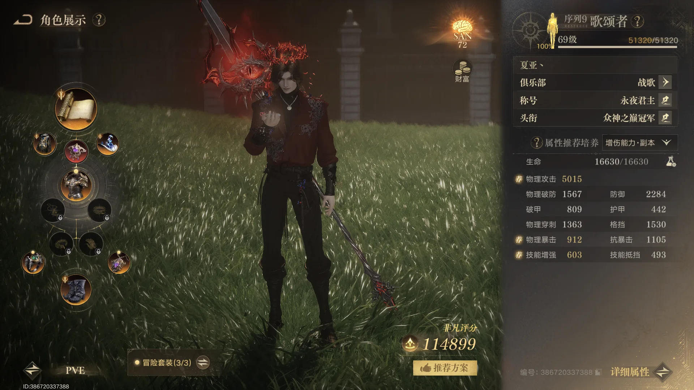
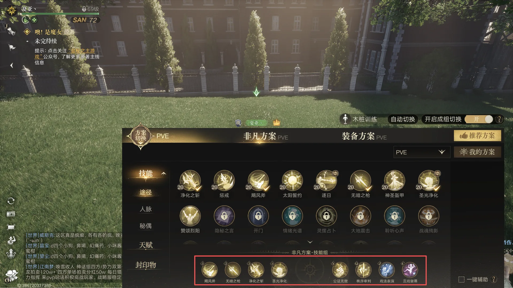
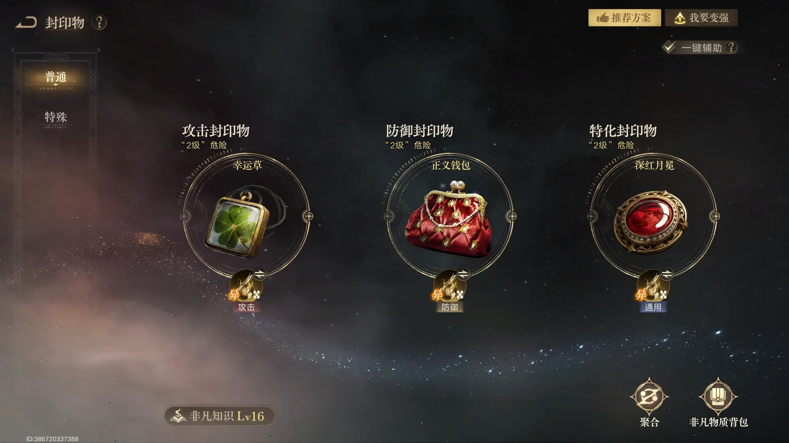
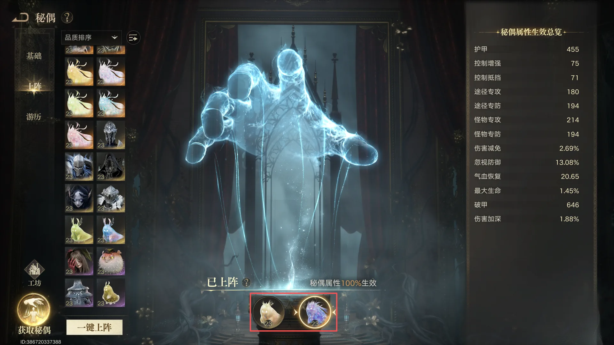
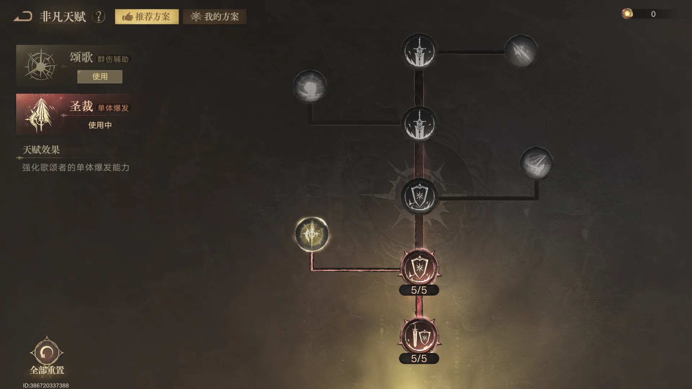

团本门槛与属性优先级
本篇以老四 / 老五团本的 1.8w 秒伤作为参考门槛，实际进组要求以所在团队为准。属性顺序比盲目堆单项面板更重要。

先把穿刺补至 1300
穿刺不足 1300 时，优先用现有资源补满。这一阶段的穿刺收益最高，不建议提前把资源分散到其他输出属性。
再补破防，再堆输出属性
穿刺达到 1300 后，将破防补到 1300。两项都达标后，按怪物专攻、技能增强、攻击的顺序继续堆叠。
独珍构筑与实战技能组
独珍优先补当前关键属性缺口；技能组的标准应是多动 Boss 中的实战覆盖，而不只是打桩数字。

独珍按当前缺口补属性
独珍装备的效果应服务于当前构筑：缺什么属性，就优先用带对应加成的独珍补齐，而不是固定照搬单一装备名单。
不要把纯打桩流当作多动 Boss 的默认解
原攻略将惩戒加太阳誓约定位为偏打桩的方案，双吃太阳誓约收益时数字更高，但多动 Boss 会持续丢失伤害。团本实战更应选择能稳定覆盖战斗过程的技能组。
三阶小丑优先于放逐
小丑达到 20 级并开启三阶后，原攻略认为伤害已高于放逐。
封印物
枪流优先保证核心伤害封印物；属性未达标与团本追伤时，各有不同的替代选择。

枪流首推四叶草
玩枪时优先选择四叶草，作为常规输出封印物。
属性不足补蠕动的饥饿，团本可换神灯
关键属性未达标时，用蠕动的饥饿补足。进入团本后，特殊封印物可换成神灯，通过刷新 CD 追求更高伤害。
秘偶
上阵组合优先服务怪物专攻与防御穿透；属性尚未达标时，允许为关键阈值做替换。

常规上阵：星之虫泳与星之虫守秘
常规推荐星之虫泳与星之虫守秘，作为 PVE 上阵组合。
破防未达标时优先补忽视防御
若破防尚未达到目标，将星之虫泳替换为提供忽视防御的上阵秘偶，先完成属性阈值再回到常规组合。
非凡天赋
PVE 输出方向选择圣裁，和前面的实战技能组、属性优先级保持一致。

选择圣裁
PVE 天赋选择圣裁，作为团本单体输出方向。